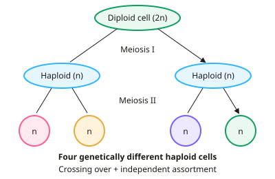

A-level Biology Year 13 · Topic 12
Genetic variation and selective breeding
Genetic variation and selective breeding looks at where variation comes from and how humans use it.
We will look in detail at meiosis, crossing over and independent assortment, then at genetic and environmental variation, continuous and discontinuous data, and the statistics used to compare them.
Finally we look at artificial selection, its benefits and its costs for genetic diversity and animal welfare.
- 3 subtopics
- 86 questions
- Free: 12.1 notes and 10 questions
In this topic
- 12.1Meiosis, crossing over and independent assortmentFree below · 34 questions
- 12.2Sources of variation: genetic and environmental, continuous and discontinuous variationOpen in Full Marks · 29 questions
- 12.3Artificial selection and selective breedingOpen in Full Marks · 23 questions
12.1 · Free notes
Meiosis, crossing over and independent assortment

Key points
- Meiosis is a reduction division. One diploid (2n) cell undergoes two nuclear divisions after a single round of DNA replication, giving four genetically different haploid (n) cells.
- In prophase I the chromosomes condense. Homologous chromosomes pair up to form bivalents, and each chromosome is made of two sister chromatids.
- Crossing over: non-sister chromatids of a homologous pair break and rejoin at chiasmata. This swaps sections of DNA (alleles) and produces new allele combinations on the chromatids (recombinants).
- In metaphase I the bivalents line up at the equator, and each pair orients randomly. This is independent assortment of maternal and paternal chromosomes into the daughter cells.
- In anaphase I whole homologous chromosomes are pulled apart and the centromeres do not divide. This halves the chromosome number (2n to n). In anaphase II the sister chromatids separate, as in mitosis.
- Independent assortment alone gives 2ⁿ chromosome combinations in gametes, where n is the haploid number. In humans 2²³ ≈ 8.4 million. Crossing over increases this further.
- Random fertilisation: any male gamete can fuse with any female gamete. In humans, ignoring crossing over, this gives 2²³ × 2²³ = 2⁴⁶ ≈ 7.0 × 10¹³ possible zygotes.
- Linked genes lie on the same chromosome and tend to be inherited together, so they do not assort independently. Crossing over between them produces recombinant offspring, and the further apart the genes, the more recombinants.
- Non-disjunction is the failure of homologous chromosomes (anaphase I) or chromatids (anaphase II) to separate. It gives gametes with n+1 or n−1 chromosomes, for example trisomy 21 (Down syndrome, 47 chromosomes).
- Compare with mitosis: mitosis has one division and gives two genetically identical diploid cells, with no pairing of homologues and no crossing over. Always use the terms 'homologous', 'non-sister chromatids' and 'haploid' in answers.
In more detail
- Chiasmata: the points where non-sister chromatids cross over; at least one forms in each bivalent, and more chiasmata usually means more recombination.
- Worked combinations: for an organism with 2n = 8 (n = 4), independent assortment gives 2⁴ = 16 combinations of chromosomes in the gametes.
- Meiosis II: like mitosis — sister chromatids are separated — but the cells are haploid and the chromatids are no longer identical because of crossing over.
- Turner and Klinefelter: non-disjunction of sex chromosomes can give XO (Turner syndrome) or XXY (Klinefelter syndrome).
Practice
Meiosis, crossing over and independent assortment: 10 questions
Pick an answer to check it, or open the answer for the explanation.
1. Which event in meiosis halves the chromosome number from diploid to haploid?
- Separation of sister chromatids in anaphase II
- Separation of homologous chromosomes in anaphase I
- Crossing over during prophase I
- DNA replication during interphase
Show answer
B: Separation of homologous chromosomes in anaphase I. Homologous chromosomes are pulled to opposite poles in anaphase I, so each daughter cell gets one chromosome from each pair. Anaphase II separates chromatids and does not change the chromosome number.
2. Crossing over in prophase I involves the exchange of DNA between which structures?
- Sister chromatids of the same chromosome
- Non-sister chromatids of a homologous pair
- Chromatids of non-homologous chromosomes
- Any two chromosomes during metaphase I
Show answer
B: Non-sister chromatids of a homologous pair. Crossing over occurs at chiasmata between non-sister chromatids of homologous chromosomes. This exchanges alleles and creates recombinant chromatids.
3. A species has a diploid number of 12. Ignoring crossing over, how many different chromosome combinations can occur in its gametes?
- 36
- 4096
- 12
- 64
Show answer
D: 64. The number of combinations is 2ⁿ where n is the haploid number. Here n = 6, so 2⁶ = 64. 4096 comes from wrongly using the diploid number (2¹²).
4. Humans have 2n = 46. Ignoring crossing over, roughly how many genetically different zygotes could one couple produce?
- 1.7 × 10⁷
- 7.0 × 10¹³
- 8.4 × 10⁶
- 2.1 × 10³
Show answer
B: 7.0 × 10¹³. Each parent can make 2²³ (≈ 8.4 × 10⁶) different gametes, and fertilisation is random. So 2²³ × 2²³ = 2⁴⁶ ≈ 7.0 × 10¹³.
5. Random orientation of bivalents, giving independent assortment, happens at which stage of meiosis?
- Telophase I
- Metaphase I
- Prophase II
- Interphase
Show answer
B: Metaphase I. In metaphase I bivalents line up at the equator, and the maternal and paternal chromosomes of each pair face either pole at random. This gives independent assortment.
6. Which statement correctly compares meiosis with mitosis?
- Meiosis: 2 haploid cells; mitosis: 4 diploid cells
- Meiosis: 4 varied haploid cells; mitosis: 2 identical diploid cells
- Homologous pairs form bivalents in mitosis but not meiosis
- Both give identical cells, but meiosis halves chromosome number
Show answer
B: Meiosis: 4 varied haploid cells; mitosis: 2 identical diploid cells. Meiosis has two divisions and gives four genetically different haploid cells. Mitosis has one division and gives two genetically identical diploid cells. Bivalents form only in meiosis.
7. A cell has genotype AaBb, with the two genes on different chromosomes. What fraction of its gametes will be ab?
- 1/16
- 1/8
- 1/2
- 1/4
Show answer
D: 1/4. Independent assortment gives four equally likely gametes: AB, Ab, aB and ab. Each is 1/4.
8. A child with Down syndrome has 47 chromosomes. What is the most likely cause?
- Non-disjunction of chromosome 21 during meiosis in a parent
- Failure of DNA replication before meiosis I
- Independent assortment of chromosome 21 in the child
- Crossing over between chromosomes 21 and 22
Show answer
A: Non-disjunction of chromosome 21 during meiosis in a parent. Non-disjunction gives a gamete with two copies of chromosome 21. Fertilisation by a normal gamete gives trisomy 21 and 47 chromosomes.
9. A cell with 2n = 8 completes meiosis I. What does each daughter cell contain?
- 8 chromosomes, each of two chromatids
- 4 chromosomes, each of two chromatids
- 4 chromosomes, each of one chromatid
- 8 chromosomes, each of one chromatid
Show answer
B: 4 chromosomes, each of two chromatids. Meiosis I separates homologues, so each cell has n = 4 chromosomes. Sister chromatids are still joined, so each chromosome has two chromatids until meiosis II.
10. Which process occurs in meiosis but not in mitosis?
- Separation of chromatids in anaphase
- Pairing of homologous chromosomes into bivalents
- Attachment of spindle fibres to centromeres
- Condensation of chromosomes
Show answer
B: Pairing of homologous chromosomes into bivalents. Homologous chromosomes pair to form bivalents only in prophase I of meiosis. Condensation, spindle attachment and chromatid separation also occur in mitosis.
Keep going in Full Marks
Full Marks has 34 questions on Meiosis, crossing over and independent assortment (24 more than here), set out in practice levels. You also get notes and 3D models for all 3 subtopics of Genetic variation and selective breeding, plus games, timed exams and past papers.
On your exam board
- OCR ATopic 6.1.2: Patterns of inheritance
- OCR BTopic 5.1: Genetics and inheritance
- EdexcelTopic 8: Origins of genetic variation
- CambridgeTopic 16: Inheritance, Topic 17: Selection and evolution
Not in the AQA specification.